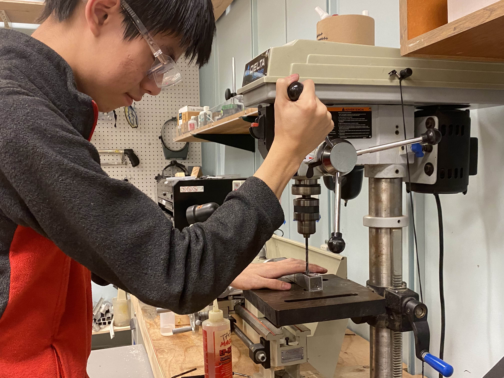

Underwater Remotely Operated Vehicles (UWROV)
Project Dates: 09/2024 - Present
Status: Ongoing
Tools involved: 3D Printing, C++, Onshape, Machining
About:
As the current CTO of UWROV, I help lead a team of 40 undergraduate students to compete in the MATE ROV challenge.
● Served as Mechanical Lead in 2025-2026, overseeing the construction of Conduit from the ground up
● Designed rotating buoyancy arms that changed the pitch of Conduit and allowed it to be passively stable
● Designed Conduit's gantry system that moved a manipulator within a frame along with 4 other members, presenting our work at UW's undergraduate research symposium
● Coordinated 10 project groups working on mechanical projects such as frame elements and manipulators simultaneously
● Worked on manipulator design in 2024-2025
● designed 2 manipulators to accomplish tasks in the competition
● placed first in the Engineering Presentation and Technical Documentation categories in the 2025 competition

CAD image of Conduit

Exploded view of a gearbox I designed for Conduit's gantry

Machining aluminum box tube to use in Conduit's central frame

Presenting our work at UWROV's winter open house


Manipulators I designed in the 2024-2025 competition season